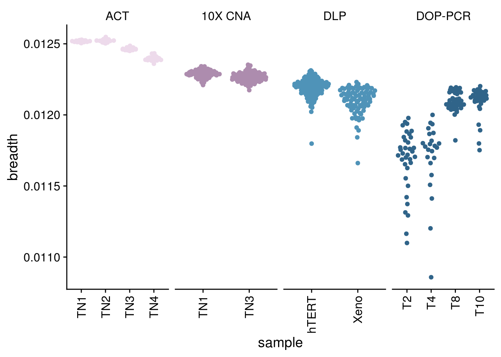
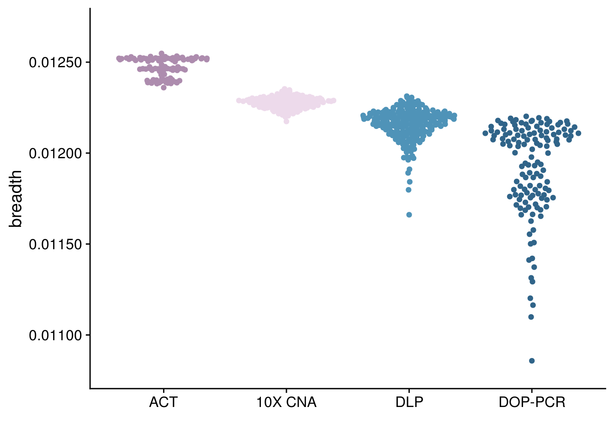
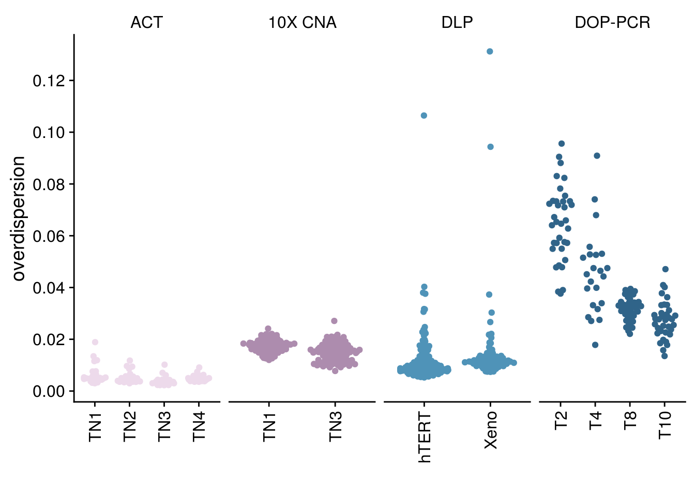
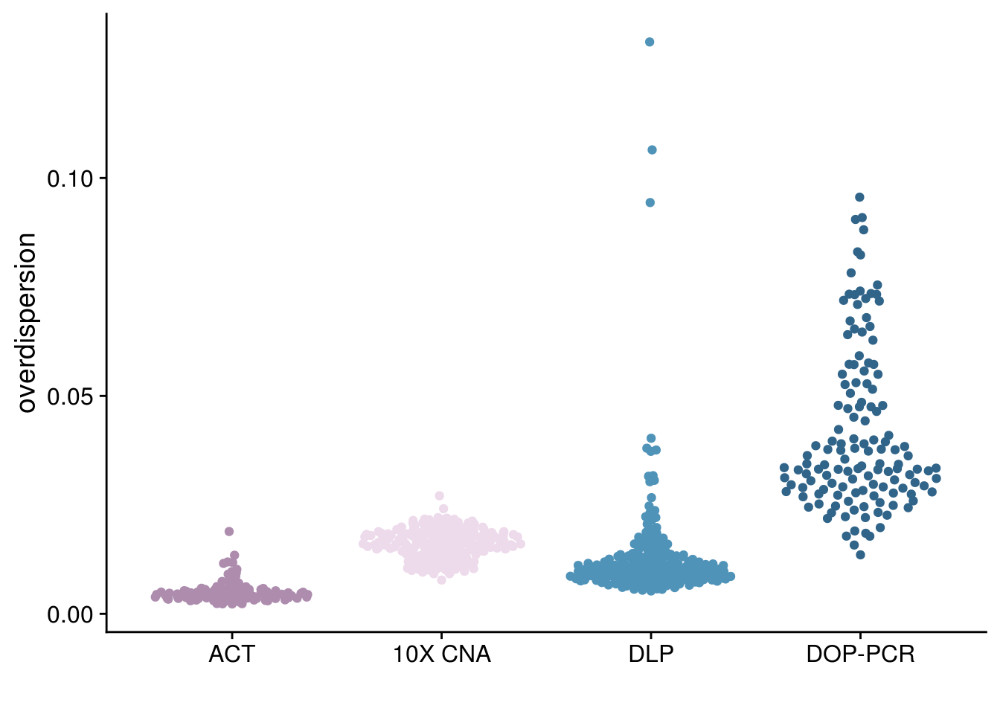

2 Technical properties
2.1 Breadth of coverage
Code to generate *.covhist files. covhist files are included in the extdata/covhist/ directory.
For ACT, 100 cells were sampled from each dataset.
> headers_commands.sh
> reads_commands.sh
> delete_commands.sh
> sort_commands.sh
> genomecoveragebed_commands.sh
> mark_duplicates_commands.sh
for INBAM in /PATH/TO/BAM/FILES/*.sort.bam
do
INFILEBASE=`basename $INBAM`
INSAMPLEBASE=${INFILEBASE%.sort.bam}
COVHISTFILE=${INSAMPLEBASE}.covhist.txt
OUTBAM=$INSAMPLEBASE.sorted.bam
INSAMPLEBASE_MD=`basename -s .sort.bam $INFILEBASE`
OUTBAM_MD=$INSAMPLEBASE
# marking duplicates
touch $OUTBAM.txt
printf "%s\n" "java -XX:ParallelGCThreads=4 -Xmx150g -jar picard.jar MarkDuplicates I=$INFILEBASE O=$OUTBAM_MD.marked.sort.bam M=$OUTBAM_MD.marked.sort.bam.txt VALIDATION_STRINGENCY=SILENT AS=true REMOVE_DUPLICATES=true MAX_RECORDS_IN_RAM=10000000 TMP_DIR=tmp" >> mark_duplicates_commands.sh
# Downsampling
# Save headers, which will not be included when downsampling
printf "%s\n" "samtools view $INSAMPLEBASE.marked.sort.bam -H > $INSAMPLEBASE.sam" >> headers_commands.sh
# Downsample by randomly selecting a subset of rows besides the header, and
# appending them to the header
# Use the file itself as the seed for the random number generator
printf "%s\n" "samtools view $INSAMPLEBASE.marked.sort.bam | shuf -n 800000 --random-source=$INSAMPLEBASE.marked.sort.bam >> $INSAMPLEBASE.sam" >> reads_commands.sh
# Sort the downsampled SAM file
printf "%s\n" "samtools sort -o $OUTBAM $INSAMPLEBASE.sam" >> sort_commands.sh
# Delete the unsorted SAM files
printf "%s\n" "rm $INSAMPLEBASE.sam" >> delete_commands.sh
# Calculate coverage maximum read size of 50 to all reads
printf "genomeCoverageBed -ibam $OUTBAM -fs 50 -g genomes/human.hg19.genome > $COVHISTFILE\n" >> genomecoveragebed_commands.sh
done
parallel --jobs 30 < mark_duplicates_commands.sh
parallel --jobs 70 < headers_commands.sh
parallel --jobs 70 < reads_commands.sh
parallel --jobs 70 < sort_commands.sh
parallel --jobs 70 < delete_commands.sh
parallel --jobs 70 < genomecoveragebed_commands.shtn1_cov <- calc_coverage(path = here("extdata/covhist/TN1/")) %>%
mutate(sample = "TN1",
tech = "ACT",
cellname = str_replace(cellname, "TN28", "TN1"))
tn2_cov <- calc_coverage(path = here("extdata/covhist/TN2/")) %>%
mutate(sample = "TN2",
tech = "ACT",
cellname = str_replace(cellname, "TN20", "TN2"))
tn3_cov <- calc_coverage(path = here("extdata/covhist/TN3/")) %>%
mutate(sample = "TN3",
tech = "ACT",
cellname = str_replace(cellname, "TN17", "TN3"))
tn4_cov <- calc_coverage(path = here("extdata/covhist/TN4/")) %>%
mutate(sample = "TN4",
tech = "ACT",
cellname = str_replace(cellname, "TN26", "TN4"))
tn1_10xcnv_cov <-
calc_coverage(path = here("extdata/covhist/TN1_10XCNA/")) %>%
mutate(sample = "TN1",
tech = "10X CNA")
tn3_10xcnv_cov <- calc_coverage(path = here("extdata/covhist/TN3_10XCNA/")) %>%
mutate(sample = "TN3",
tech = "10X CNA")
t2_doppcr_cov <- calc_coverage(path = here("extdata/covhist/T2_DOPPCR//")) %>%
mutate(sample = "T2",
tech = "DOP-PCR")
t4_doppcr_cov <- calc_coverage(path = here("extdata/covhist/T4_DOPPCR/")) %>%
mutate(sample = "T4",
tech = "DOP-PCR")
t8_doppcr_cov <- calc_coverage(path = here("extdata/covhist/T8_DOPPCR/")) %>%
mutate(sample = "T8",
tech = "DOP-PCR")
t10_doppcr_cov <- calc_coverage(path = here("extdata/covhist/T10_DOPPCR/")) %>%
mutate(sample = "T10",
tech = "DOP-PCR")
dlp_htert_cov <- calc_coverage(path = here("extdata/covhist/DLP_htert/")) %>%
mutate(sample = "hTERT",
tech = "DLP")
dlp_xeno_cov <- calc_coverage(path = here("extdata/covhist/DLP_xeno/")) %>%
mutate(sample = "Xeno",
tech = "DLP")
# bincounts
TN1_bincounts <- readRDS(here("extdata/bincounts/TN1_bincounts.rds"))
TN2_bincounts <- readRDS(here("extdata/bincounts/TN2_bincounts.rds"))
TN3_bincounts <- readRDS(here("extdata/bincounts/TN3_bincounts.rds"))
TN4_bincounts <- readRDS(here("extdata/bincounts/TN4_bincounts.rds"))
TN1_10XCNA_bincounts <- readRDS(here("extdata/bincounts/TN1_10XCNA_bincounts.rds"))
TN3_10XCNA_bincounts <- readRDS(here("extdata/bincounts/TN3_10XCNA_bincounts.rds"))
DLP_xeno_bincounts <- readRDS(here("extdata/bincounts/DLP_xeno_bincounts.rds"))
DLP_htert_bincounts <- readRDS(here("extdata/bincounts/DLP_htert_bincounts.rds"))
T2_DOPPCR_bincounts <- readRDS(here("extdata/bincounts/T2_DOPPCR_bincounts.rds"))
T4_DOPPCR_bincounts <- readRDS(here("extdata/bincounts/T4_DOPPCR_bincounts.rds"))
T8_DOPPCR_bincounts <- readRDS(here("extdata/bincounts/T8_DOPPCR_bincounts.rds"))
T10_DOPPCR_bincounts <- readRDS(here("extdata/bincounts/T10_DOPPCR_bincounts.rds"))all_cov <- rbind(tn2_cov,
tn1_cov,
tn1_10xcnv_cov,
tn4_cov,
t2_doppcr_cov,
t4_doppcr_cov,
tn3_cov,
tn3_10xcnv_cov,
t8_doppcr_cov,
t10_doppcr_cov,
dlp_htert_cov,
dlp_xeno_cov)
p_breadth <- all_cov %>%
mutate(tech = as.factor(tech)) %>%
mutate(sample = as.factor(sample)) %>%
mutate(sample = fct_relevel(sample, gtools::mixedsort(unique(all_cov$sample)))) %>%
mutate(tech = fct_relevel(tech, c("ACT", "10X CNA","DLP", "DOP-PCR"))) %>%
ggplot() +
geom_quasirandom(aes(x = sample, y = breadth, color = tech)) +
scale_color_paletteer_d("nord::lumina") +
theme_cowplot() +
facet_wrap(vars(tech), nrow = 1, scales = "free_x") +
theme(axis.text.x = element_text(angle = 90,
vjust = .5,
hjust = 1),
strip.background = element_rect(fill = "white"),
legend.position = "none")
p_breadth
p_breadth_tech <-
ggplot(all_cov) +
geom_quasirandom(aes( fct_relevel(tech, c("ACT", "10X CNA", "DLP","DOP-PCR")), y = breadth, color = tech)) +
theme_cowplot() +
scale_color_paletteer_d("nord::lumina") +
scale_y_continuous(limits = c(0.0108, 0.0127), labels = scales::label_number(digits = 3)) +
xlab("") +
theme_cowplot() +
theme(legend.position = "none")
p_breadth_tech
## # A tibble: 1 x 6
## .y. n statistic df p method
## * <chr> <int> <dbl> <int> <dbl> <chr>
## 1 breadth 662 537. 3 4.06e-116 Kruskal-Wallis## # A tibble: 6 x 9
## .y. group1 group2 n1 n2 statistic p p.adj p.adj.signif
## * <chr> <chr> <chr> <int> <int> <dbl> <dbl> <dbl> <chr>
## 1 breadth 10X CNA ACT 200 100 6.98 2.97e-12 5.95e-12 ****
## 2 breadth 10X CNA DLP 200 228 -11.3 2.10e-29 6.29e-29 ****
## 3 breadth 10X CNA DOP-PCR 200 134 -16.3 1.24e-59 6.18e-59 ****
## 4 breadth ACT DLP 100 228 -16.2 3.62e-59 1.45e-58 ****
## 5 breadth ACT DOP-PCR 100 134 -20.2 5.71e-91 3.43e-90 ****
## 6 breadth DLP DOP-PCR 228 134 -6.68 2.35e-11 2.35e-11 ****2.2 Overdispersion
TN1_overdispersion <- map_dfr(TN1_bincounts,
overdispersion) %>%
t() %>%
as.data.frame() %>%
mutate(sample = "TN1",
tech = "ACT",
cells = names(TN1_bincounts)) %>%
dplyr::rename(iod = "V1")
TN2_overdispersion <- map_dfr(TN2_bincounts,
overdispersion) %>%
t() %>%
as.data.frame() %>%
mutate(sample = "TN2",
tech = "ACT",
cells = names(TN2_bincounts)) %>%
dplyr::rename(iod = "V1")
TN3_overdispersion <- map_dfr(TN3_bincounts,
overdispersion) %>%
t() %>%
as.data.frame() %>%
mutate(sample = "TN3",
tech = "ACT",
cells = names(TN3_bincounts)) %>%
dplyr::rename(iod = "V1")
TN4_overdispersion <- map_dfr(TN4_bincounts,
overdispersion) %>%
t() %>%
as.data.frame() %>%
mutate(sample = "TN4",
tech = "ACT",
cells = names(TN4_bincounts)) %>%
dplyr::rename(iod = "V1")
#10X CNA
names(TN1_10XCNA_bincounts) <- str_replace(names(TN1_10XCNA_bincounts), "\\.", "-")
TN1_10XCNA_overdispersion <- map_dfr(TN1_10XCNA_bincounts,
overdispersion) %>% t() %>% as.data.frame() %>%
mutate(sample = "TN1",
tech = "10X CNA",
cells = names(TN1_10XCNA_bincounts)) %>%
dplyr::rename(iod = "V1")
names(TN3_10XCNA_bincounts) <- str_replace(names(TN3_10XCNA_bincounts), "\\.", "-")
TN3_10XCNA_overdispersion <- map_dfr(TN3_10XCNA_bincounts,
overdispersion) %>% t() %>% as.data.frame() %>%
mutate(sample = "TN3",
tech = "10X CNA",
cells = names(TN3_10XCNA_bincounts)) %>%
dplyr::rename(iod = "V1")
# DLP
DLP_xeno_overdispersion <- map_dfr(DLP_xeno_bincounts[,-c(1:3)],
overdispersion) %>%
t() %>%
as.data.frame() %>%
mutate(sample = "Xeno",
tech = "DLP",
cells = names(DLP_xeno_bincounts)[-c(1:3)]) %>%
dplyr::rename(iod = "V1")
DLP_htert_overdispersion <- map_dfr(DLP_htert_bincounts[,-c(1:3)],
overdispersion) %>%
t() %>%
as.data.frame() %>%
mutate(sample = "hTERT",
tech = "DLP",
cells = names(DLP_htert_bincounts)[-c(1:3)]) %>%
dplyr::rename(iod = "V1")
#DOP-PCR
T2_DOPPCR_overdispersion <- map_dfr(T2_DOPPCR_bincounts[,-c(1:3)],
overdispersion) %>%
t() %>%
as.data.frame() %>%
mutate(sample = "T2",
tech = "DOP-PCR",
cells = toupper(names(T2_DOPPCR_bincounts)[-c(1:3)])) %>%
dplyr::rename(iod = "V1")
T4_DOPPCR_overdispersion <- map_dfr(T4_DOPPCR_bincounts[,-c(1:3)],
overdispersion) %>%
t() %>%
as.data.frame() %>%
mutate(sample = "T4",
tech = "DOP-PCR",
cells = toupper(names(T4_DOPPCR_bincounts)[-c(1:3)])) %>%
dplyr::rename(iod = "V1")
T8_DOPPCR_overdispersion <- map_dfr(T8_DOPPCR_bincounts[,-c(1:3)],
overdispersion) %>%
t() %>%
as.data.frame() %>%
mutate(sample = "T8",
tech = "DOP-PCR",
cells = toupper(names(T8_DOPPCR_bincounts)[-c(1:3)])) %>%
dplyr::rename(iod = "V1")
T10_DOPPCR_overdispersion <- map_dfr(T10_DOPPCR_bincounts[,-c(1:3)],
overdispersion) %>%
t() %>%
as.data.frame() %>%
mutate(sample = "T10",
tech = "DOP-PCR",
cells = toupper(names(T10_DOPPCR_bincounts)[-c(1:3)])) %>%
dplyr::rename(iod = "V1")all_overdispersion <- bind_rows(
TN1_overdispersion,
TN2_overdispersion,
TN3_overdispersion,
TN4_overdispersion,
T2_DOPPCR_overdispersion,
T4_DOPPCR_overdispersion,
T8_DOPPCR_overdispersion,
T10_DOPPCR_overdispersion,
DLP_htert_overdispersion,
DLP_xeno_overdispersion,
TN1_10XCNA_overdispersion,
TN3_10XCNA_overdispersion
)
# subsetting same cells sampled during the BAM file sampling for coverage breadth
all_overdispersion <- all_overdispersion %>%
filter(cells %in% all_cov$cellname)
p_iod <- all_overdispersion %>% mutate(tech = as.factor(tech)) %>%
mutate(sample = as.factor(sample)) %>%
mutate(sample = fct_relevel(sample, gtools::mixedsort(unique(all_cov$sample)))) %>%
mutate(tech = fct_relevel(tech, c("ACT", "10X CNA", "DLP", "DOP-PCR"))) %>%
ggplot() +
ggbeeswarm::geom_quasirandom(aes(x = sample,
y = iod,
color = tech)) +
scale_color_manual(values = paletteer_d("nord::lumina")) +
facet_wrap(vars(tech), nrow = 1, scales = "free_x") +
scale_y_continuous(breaks = scales::pretty_breaks(n=10)) +
theme_cowplot() +
theme(axis.text.x = element_text(angle = 90,
hjust = 1,
vjust = 0.5),
legend.position = "none",
strip.background = element_rect(fill = "white")) +
ylab("overdispersion") +
xlab("")
p_iod
p_iod_tech <-
all_overdispersion %>%
ggplot(aes(x = fct_relevel(tech, c("ACT", "10X CNA", "DLP","DOP-PCR")),
y = iod)) +
ggbeeswarm::geom_quasirandom(aes(color = tech)) +
scale_y_continuous(breaks = scales::pretty_breaks(n=5)) +
scale_color_paletteer_d("nord::lumina") +
theme_cowplot() +
xlab("") +
ylab("overdispersion") +
theme(legend.position = "none")
p_iod_tech